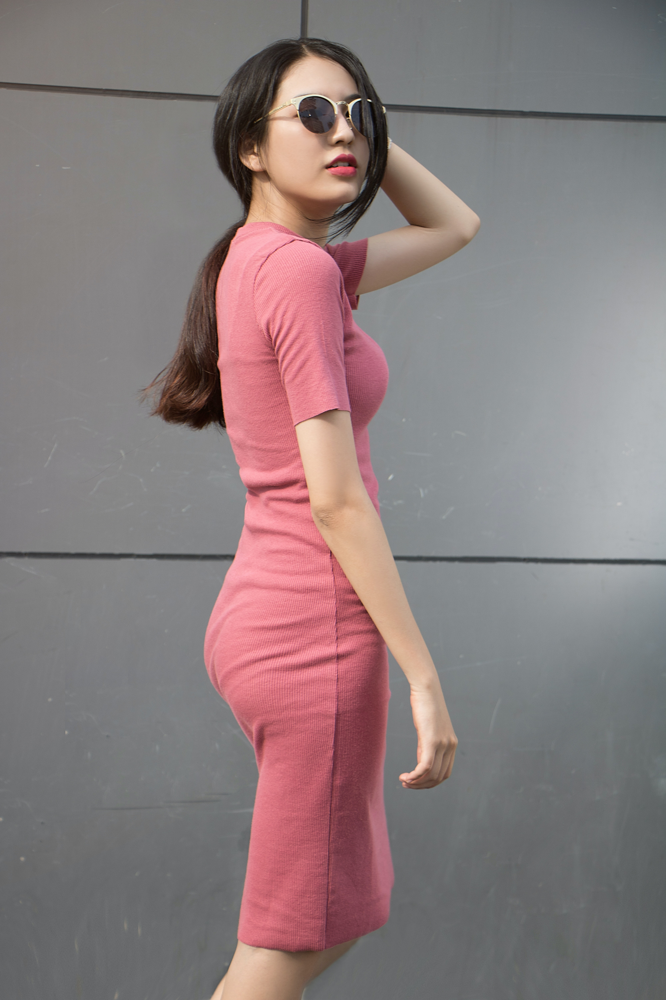
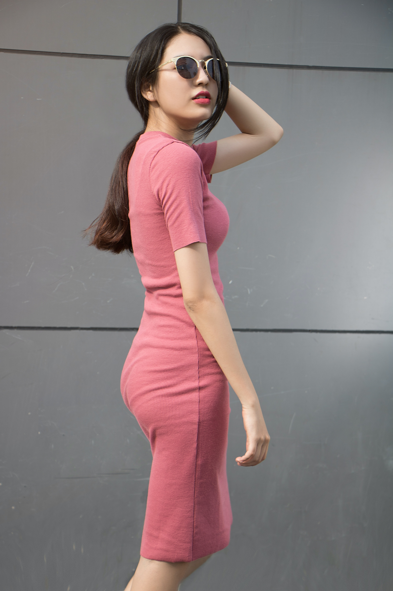

Mare Studio es una marca familiar de indumentaria femenina, en la que cuatro hermanas diseñan y confeccionan las prendas de forma autónoma. Es un emprendimiento que surgió por diversión en la pandemia en el año 2020 y se transformo en un proyecto más importante, luego de mucha esfuerzo consiguió su primer sucursal a la calle en 2021. La propuesta de valor en Mare Studio es hacer partícipe al cliente en el diseño de las prendas a través de encuentas en instagram. Esto a partir de que la visión de la marca es que el cliente sienta comodidad con su prenda y confianza con la marca. La principal fuente de compra es instagram y sus ventas son online a todo el pais y de manera física en su local en Entre Rios, Concepción del Uruguay.

 
